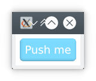

KAS Tutorials
These tutorials concern the KAS GUI system. See also the KAS examples and 7GUIs examples.
Further reading can be found on the KAS blog.
Please ask questions on the discussion boards or on the tutorials issue tracker.
Requirements
It is assumed that you are already familiar with the Rust language. If not, then Learn Rust!
It is also assumed that you have basic familiarity with git and basic command line tools, though these aren't a significant topic of the tutorials.
We suggest using the latest stable Rust toolchain (or at least, a recent one) — Install Rust. Tutorials should use the latest stable release of KAS, and KAS often uses newly-stabilised Rust features. You can probably use beta or nightly Rust instead, if preferred.
Code samples are formatted using rustfmt.
Examples
All significant examples can be found as working apps in the example directory.
To run the examples locally, check out the tutorials repository, then run e.g.:
git clone https://github.com/kas-gui/tutorials.git
cd tutorials
cargo run --example counter
Licence
This tutorial, including text but excluding code samples, is licensed under CC BY-SA 4.0


Code samples found within this tutorial are marked with CC0 1.0

Hello

Lets start by building a really simple UI, containing just a button. (This is basically just a template. Source.)
use kas::widget::{TextButton, Window}; fn main() -> Result<(), kas_wgpu::Error> { env_logger::init(); let content = TextButton::new("Push me"); let window = Window::new("Hello", content); let theme = kas_theme::ShadedTheme::new(); kas_wgpu::Toolkit::new(theme)?.with(window)?.run() }
cargo run --example hello
Hopefully that is clear enough? Let me explain anyway:
- our
mainfunction may fail with thekas_wgpu::Errortype;Toolkit::newandToolkit::withcan fail (the?"try" operator) - we initialise a logger,
env_logger(optional, but lets us get useful messages; try setting the environment variableRUST_LOG=kas=infoortracebefore running the example) - we construct a
TextButtonand aWindowaround that - we use the
ShadedTheme(with default colours) - we initialise the toolkit with our theme, add our window, and run it
Note that Toolkit::run does not return. It is in fact a wrapper around
winit::event_loop::EventLoop::run, which does not return.
By default, the program will exit after all windows have closed.
Also note that we only import our widgets into the module (use kas::widget::{..}),
but don't import anything from the other crates: we use env_logger::init,
kas_theme::ShadedTheme and kas_wgpu::Toolkit directly since we don't need
any other items from these crates.
Event handling
You may have noticed that the button used above doesn't do anything. Lets fix that.
If you look at the TextButton docs, you'll notice that it has an on_push
method, allowing a closure to be set as a "push" event handler. This closure
must have the following type:
F: Fn(&mut Manager<'_>) -> Option<M> + 'static
In other words, it takes a reference to the Manager and returns an optional
message of type M. We'll come back to messages later; for now we can just
return None — well, we could if type inference worked, but since None could
be an option of any type we have to specify that we want VoidMsg:
#![allow(unused)] fn main() { let content = TextButton::new("Push me").on_push::<VoidMsg, _>(|_| { println!("Hello!"); None }); }
But let's not just print to the command-line: lets use the Manager to open
a message dialog!
#![allow(unused)] fn main() { let content = TextButton::new("&Push me").on_push::<VoidMsg, _>(|mgr| { let mbox = MessageBox::new("Message", "You pushed the button."); mgr.add_window(Box::new(mbox)); None }); }
One final note: did you see we put an ampersand in "&Push me"? Try holding
Alt and pressing P when you run the example:
cargo run --example hello-handler
Counter

This tutorial follows on from hello, turning the example into a counter.
Layout
To make a counter, we need two widgets: a button and a label. Lets solve the
layout part first, using make_widget (although this isn't the only way to do
layout).
use kas::event::VoidMsg; use kas::macros::make_widget; use kas::widget::{Label, TextButton, Window}; fn main() -> Result<(), kas_wgpu::Error> { env_logger::init(); let content = make_widget! { #[layout(column)] #[handler(msg = VoidMsg)] struct { #[widget(halign = centre)] display = Label::new("0".to_string()), #[widget] _ = TextButton::new("&count"), counter: u32 = 0, } }; let window = Window::new("Counter", content); let theme = kas_theme::ShadedTheme::new(); kas_wgpu::Toolkit::new(theme)?.with(window)?.run() }
make_widget
make_widget is a macro, and macros are allowed to invent syntax. The contents
of make_widget!{..} look roughly like normal Rust code, but with a few
oddities.
If you are looking for the API reference for make_widget, there isn't one.
There simply isn't a standard way to write macro documentation.
There is a reference manual, kas::macros, but for now it's probably better
to continue reading this tutorial.
So what does make_widget actually do? It's quite simple actually: it creates
an anonymous/unnamed struct (which Rust does not have native syntax for),
adds #[derive(Debug, kas::macros::Widget)] to it, and creates two hidden
fields (core and layout_data). (This is a lie. Making
anonymous structs work nicely via a macro is not simple, and there are several
features applicable only to widgets. But it gives you a rough idea.)
Most of what follows is actually about the derive(Widget) macro, which
you'll see more of later.
Widget attributes
From the code above:
#![allow(unused)] fn main() { #[layout(column)] #[handler(msg = VoidMsg)] struct { .. } }
The widget we are making is a "parent" widget, with column layout. (A few
other layouts are available, such as single, row, grid, left.)
The widget produces a message of type VoidMsg. This is a "void type" (i.e.
enum VoidMsg {}) and as such cannot be constructed: in other words, the
widget does not produce any messages.
Aside: VoidMsg could and should be the default allowing the handler
attribute to be omitted, but using the wrong type currently results in very poor
error messages, so for now it's better if the macro does not make any
assumptions about the message type.
The widget struct
As said, make_widget constructs an anonymous struct. Structs have fields:
#![allow(unused)] fn main() { struct { #[widget(halign = centre)] display = Label::new("0".to_string()), #[widget] _ = TextButton::new("&count"), counter: u32 = 0, } }
Okay, you'll notice a few strange things here:
- The struct has no name, of course.
- Fields are assigned values. Since the struct is unnamed, it must be constructed immediately, hence values are essential.
- Field types are often omitted, since they can often be inferred. (Warning: inferred types use type parameters internally, and can produce strange error messages).
- Fields don't always have names. With widgets it's quite common that you
never need to refer to a field after constructing it, hence you can just
use
_. - The first two fields are a
#[widget]...
A widget must be configured when the GUI is constructed, must have size
constraints evaluated and be assigned a rectangle, and (if interactive) must
handle events (and more). The #[widget] attribute sets this stuff up for each
child widget.
This attribute allows some configuration, here halign = centre (set horizontal
alignment to centre). This is all covered in the kas::macros manual, but
for now lets move on.
Events and messages
Now, lets make the button work, using messages.
use kas::class::HasString; use kas::event::{Manager, Response, VoidMsg}; use kas::macros::make_widget; use kas::widget::{Label, TextButton, Window}; fn main() -> Result<(), kas_wgpu::Error> { env_logger::init(); let content = make_widget! { #[layout(column)] #[handler(msg = VoidMsg)] struct { #[widget(halign = centre)] display: impl HasString = Label::new("0".to_string()), #[widget(handler = count)] _ = TextButton::new_msg("&count", ()), counter: u32 = 0, } impl { fn count(&mut self, mgr: &mut Manager, _: ()) -> Response<VoidMsg> { self.counter += 1; *mgr |= self.display.set_string(self.counter.to_string()); Response::None } } }; let window = Window::new("Counter", content); let theme = kas_theme::ShadedTheme::new(); kas_wgpu::Toolkit::new(theme)?.with(window)?.run() }
cargo run --example counter
Messages
First off, our button's constructor is now: TextButton::new_msg("&count", ()).
Lets look at the TextButton API again.
new_msg is just a convenience method. We could have used
TextButton::new_on("&count", |_| Some(())) or even
TextButton::new("&count").on_push(|_| Some(())). But why?
Traditional GUI toolkits like Qt and GTK allow widgets communicate by passing pointers/references about. Several modern toolkits, inspired by the Elm architecture, separate View (widgets) from Model (state/data) entirely. KAS does neither of these things: state can be stored in widgets (like Qt), and type-safe messages are used to communicate between widgets.
Messages are very simple: an interactive widget generates a message when
something happens (like a button being clicked), puts it in a Response,
then the message gets sent up to the parent widget, where it either gets handled
or sent up again (to the parent's parent).
Note that a window cannot send messages anywhere, so the top widget's message
type must be VoidMsg.
A handler
Our "count" button doesn't need to send a complicated message, so we just use
(). This is the second parameter of the constructor:
TextButton::new_msg("&count", ()).
To handle this, we put a method on our widget:
#![allow(unused)] fn main() { impl { fn count(&mut self, mgr: &mut Manager, _: ()) -> Response<VoidMsg> { self.counter += 1; *mgr |= self.display.set_string(self.counter.to_string()); Response::None } } }
Note that, as with struct, there is no name on the impl. Beyond that, this
is just a normal method:
- handlers must have parameters
&mut self,mgr, andmsg: M(whereMis the type of the message being handled) - handlers return
Response<N>whereNis the message type send to the parent (in this caseVoidMsgsince we're done handling this event)
In this particular case, we ignore the message (since () is not interesting),
increment our counter field, and update the display.
Note that self.display.set_string(..) returns a TkAction. This is a type
indicating to the GUI which "update" actions are needed. Internally it is a
bitflags struct, so two actions can be combined with a | b and an action
can be forwarded to the manager with *mgr |= action.
Note also that there is a little trust in the GUI developer here: if the action
is ignored, an update might not happen. This is never catastrophic, and
sometimes completely harmless (e.g. in this case a re-draw will be requested by
the button being pressed anyway). Note also that TkAction has the
#[must_use] attribute so the compiler won't let you forget it.
Attributes and bounds
In order to bind our count method to the TextButton, we use the widget
attribute again: #[widget(handler = count)].
Finally, to make it possible to use the self.display.set_string method in our
count method, we need to either give display a concrete type
(Label<String>) or bound it with the HasString trait.
We do the latter with the impl Trait syntax:
#![allow(unused)] fn main() { #[widget(halign = centre)] display: impl HasString = Label::new("0".to_string()), #[widget(handler = count)] _ = TextButton::new_msg("&count", ()), }
Aside: it should (in my opinion) be possible to call methods and access fields on fields with inferred types without a trait bound, but for now it's not (a language limitation). This is KAS#15.